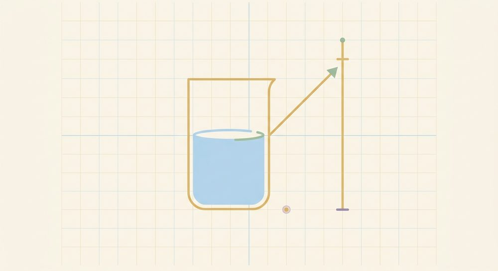

Modeling & Translation
Fresh, parallel-form problems with full worked solutions — more reps for the skills in this unit, kept separate from the textbook's own problems.

Lesson 6.1: Translating words into expressions and equations
Translate to an equation, then solve: "9 less than a number is 14." (Let x = the number.) Also explain in one sentence why the left side is x - 9 and not 9 - x.
Worked solutionTry it first, then open.
Define the variable: let x = the number. "9 less than a number" means start with the number and take 9 away from it, so it is x - 9 (not 9 - x, which would be 9 with the number taken away from it — a different quantity). The word "is" gives the =. Equation: x - 9 = 14. Add 9 to both sides: x = 23. Check in the original words: 9 less than 23 is 14.
Answer: 23
Translate to an equation, then solve: "8 more than three times a number is 35." (Let x = the number.)
Worked solutionTry it first, then open.
Let x = the number. "Three times a number" is 3x; "8 more than 3x" is 3x + 8. The word "is" gives the =, and the right side is 35. Equation: 3x + 8 = 35. Subtract 8: 3x = 27. Divide by 3: x = 9. Check in words: three times 9 is 27; 8 more than 27 is 35.
Answer: 9
Translate to an equation, then solve: "A number divided by 5, then increased by 6, is 10." (Let x = the number.) Which word tells you where the equals sign goes?
Worked solutionTry it first, then open.
Let x = the number. "A number divided by 5" is x/5; "increased by 6" adds 6, giving x/5 + 6. The word "is" tells you where the = goes, with 10 on the right. Equation: x/5 + 6 = 10. Subtract 6: x/5 = 4. Multiply by 5: x = 20. Check in words: 20 divided by 5 is 4; 4 increased by 6 is 10.
Answer: 20
Translate to an equation, then solve (variable on both sides): "Three times the sum of a number and 4 equals five times the number." (Let x = the number.)
Worked solutionTry it first, then open.
Let x = the number. "The sum of a number and 4" is (x + 4), so "three times the sum" is 3(x + 4). "Five times the number" is 5x, and "equals" gives the =. Equation: 3(x + 4) = 5x. Distribute the left side: 3x + 12 = 5x. Subtract 3x from both sides: 12 = 2x. Divide by 2: x = 6. Check in words: the sum of 6 and 4 is 10, three times that is 30; five times 6 is also 30.
Answer: 6
Lesson 6.2: Classic word problems (number, age, distance, value & relationship)
Three consecutive odd integers sum to 63. Find them.
Worked solutionTry it first, then open.
Define the variable: let n = the smallest odd integer. Consecutive odd integers jump by 2, so the next two are n + 2 and n + 4 (write the other unknowns in terms of the first). The structure is "the three add to 63": n + (n + 2) + (n + 4) = 63. Combine: 3n + 6 = 63, so 3n = 57 and n = 19. The integers are 19, 21, 23. Check in the original words: 19 + 21 + 23 = 63, and all three are odd.
Answer: 19
Maya is 7 years older than her brother. Together their ages total 41. How old is each?
Worked solutionTry it first, then open.
Define the variable: let b = the brother's age. The second unknown in terms of the first: Maya's age = b + 7 ("7 years older"). The structure is "their ages total 41": b + (b + 7) = 41. Combine: 2b + 7 = 41, so 2b = 34 and b = 17. The brother is 17; Maya is 17 + 7 = 24. Check in the original words: Maya (24) is 7 more than her brother (17), and 17 + 24 = 41.
Answer: 17
Two cars leave the same point at the same time in opposite directions, one at 58 mph and the other at 62 mph. After how many hours are they 480 miles apart?
Worked solutionTry it first, then open.
Define the variable: let t = the time in hours (both cars share the same t). Using d = rt, the first car covers 58t and the second 62t. They head in opposite directions, so the distance between them is the SUM of the two distances: 58t + 62t = 480. Combine: 120t = 480, so t = 4 hours. Check in the original words: in 4 hours one car goes 58(4) = 232 mi and the other 62(4) = 248 mi; 232 + 248 = 480 miles apart.
Answer: 4
A jar holds 30 coins, all nickels and quarters, worth $4.90 total. How many of each? (Light stretch: bigger value gap between the coins.)
Worked solutionTry it first, then open.
Define the variable: let n = the number of nickels. Then the number of quarters is the rest of the 30 coins, 30 - n (second unknown in terms of the first). Work in dollars for the whole equation: value = 0.05n + 0.25(30 - n) = 4.90. Distribute: 0.05n + 7.50 - 0.25n = 4.90, so -0.20n + 7.50 = 4.90. Subtract 7.50: -0.20n = -2.60, so n = 13. There are 13 nickels and 30 - 13 = 17 quarters. Check in the original words: 30 coins, and 13(0.05) + 17(0.25) = 0.65 + 4.25 = $4.90.
Answer: 13
Lesson 6.3: Scatter plots & line of best fit (a first taste of data)
For each pair, name the likely association (positive / negative / none): (a) a plant's number of sunlight hours per day vs. its height after a month; (b) the outdoor temperature vs. the number of layers of clothing people wear; (c) a student's house number vs. their score on a math test.
Worked solutionTry it first, then open.
Association is about the DIRECTION of the trend (does the cloud rise or fall left to right), not the sign of the numbers. (a) Positive — more sunlight tends to go with a taller plant (cloud rises). (b) Negative — as temperature goes up, layers of clothing tend to go down (cloud falls). (c) None — a house number and a test score have no reason to trend together, so the points would scatter with no clear up-or-down direction.
Answer: (a) positive; (b) negative; (c) none
A best-fit line for (hours practiced x, words typed per minute y) is f(x) = 4x + 5. Predict the typing speed after x = 7 hours of practice. Then say in context what the slope 4 and the intercept 5 each mean (one sentence each).
Worked solutionTry it first, then open.
Predicting just means evaluating the linear function (the same skill from Unit 5): f(7) = 4(7) + 5 = 28 + 5 = 33 words per minute. In context, the slope 4 is a rate — about 4 more words per minute for each extra hour of practice; the intercept 5 is the predicted speed with zero practice (5 words per minute at x = 0).
Answer: 33
A best-fit line for (daily soda servings x, dental health score y) is f(x) = -3x + 40. (a) Predict the score for someone with x = 8 servings. (b) Is the association positive or negative? (c) Does this prove that drinking soda CAUSES worse dental health? Explain in one sentence.
Worked solutionTry it first, then open.
(a) Evaluate the function: f(8) = -3(8) + 40 = -24 + 40 = 16. (b) The slope is negative (-3), so the association is NEGATIVE — more soda tends to go with a lower dental health score (the cloud falls left to right). (c) No — a downward trend shows the two move together, but it does not prove causation; some other factor (such as overall diet or dental-care habits) could drive both. Correlation is not causation.
Answer: 16
The best-fit line f(x) = 4x + 5 from problem 6.3.T2 was built from data where x ran from 0 to 9 hours. (a) Is predicting at x = 14 an interpolation or an extrapolation? (b) Is that prediction more or less trustworthy than a prediction made inside the data range, and why? (Light stretch.)
Worked solutionTry it first, then open.
(a) x = 14 lies OUTSIDE the data's x-range of 0 to 9, so predicting there is an EXTRAPOLATION (predicting inside the 0-to-9 range would be interpolation). (b) It is LESS trustworthy: extrapolation reaches beyond the data the line was fit to, and the real trend may bend or stop holding out there (a person can't keep speeding up forever). The farther outside the range you reach, the riskier the prediction — interpolation, which stays inside the data, is the more trustworthy kind.
Answer: extrapolation; less trustworthy than interpolation because x = 14 reaches outside the data range 0-9
Mixed review
Problems that mix skills from across the unit — good for spacing earlier work back in.
Translate to an equation, then solve (variable on both sides): "9 less than twice a number equals the number increased by 6." (Let x = the number.)
Worked solutionTry it first, then open.
Let x = the number. "Twice a number" is 2x, and "9 less than 2x" is 2x - 9. "The number increased by 6" is x + 6, and "equals" gives the =. Equation: 2x - 9 = x + 6. Subtract x from both sides: x - 9 = 6. Add 9: x = 15. Check in the original words: twice 15 is 30, and 9 less than 30 is 21; 15 increased by 6 is also 21.
Answer: 15
Four consecutive integers sum to 90. Find them.
Worked solutionTry it first, then open.
Define the variable: let n = the smallest integer. The next three consecutive integers are n + 1, n + 2, and n + 3 (each one more than the last). The structure is "the four add to 90": n + (n + 1) + (n + 2) + (n + 3) = 90. Combine: 4n + 6 = 90, so 4n = 84 and n = 21. The integers are 21, 22, 23, 24. Check in the original words: 21 + 22 + 23 + 24 = 90.
Answer: 21
A coin purse holds 24 coins, all dimes and quarters, worth $3.45 total. How many of each?
Worked solutionTry it first, then open.
Define the variable: let d = the number of dimes. The number of quarters is the rest of the 24 coins, 24 - d. Work in dollars throughout: 0.10d + 0.25(24 - d) = 3.45. Distribute: 0.10d + 6.00 - 0.25d = 3.45, so -0.15d + 6.00 = 3.45. Subtract 6.00: -0.15d = -2.55, so d = 17. There are 17 dimes and 24 - 17 = 7 quarters. Check in the original words: 24 coins, and 17(0.10) + 7(0.25) = 1.70 + 1.75 = $3.45.
Answer: 17
A best-fit line for (a car's age in years x, its resale value in hundreds of dollars y) is f(x) = -4x + 100. (a) Predict the resale value (in hundreds of dollars) for a 9-year-old car. (b) Is the association positive or negative, and what does the slope -4 mean in context (one sentence)?
Worked solutionTry it first, then open.
(a) Evaluate the function: f(9) = -4(9) + 100 = -36 + 100 = 64, i.e. about $6,400 (64 hundreds of dollars). (b) The slope is negative, so the association is NEGATIVE; the slope -4 is a rate meaning the resale value drops by about 4 hundred dollars ($400) for each additional year of the car's age.
Answer: 64
A train covers 390 miles in 6 hours at a steady speed. What is its speed? (Use d = rt, and note the speed is the slope of a distance-vs-time graph.)
Worked solutionTry it first, then open.
Define the variable: let r = the speed in mph. Use the distance-rate-time relationship d = rt with d = 390 miles and t = 6 hours: r · 6 = 390. Divide both sides by 6: r = 65 mph. (On a distance-vs-time graph this steady speed is exactly the slope — the same rate idea as a line of best fit's slope.) Check in the original words: 65 mph × 6 hours = 390 miles.
Answer: 65